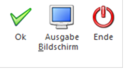

Durchschnitte dienen der Berechnung von speziellen Lohnarten wie z.B. Überstunden oder Sonderzahlungen.
Im WinLine LOHN können beliebig viele Durchschnitte verwaltet werden, wobei es von der Lohnart abhängt, welche Durchschnitte tatsächlich im Zuge der Abrechnung beschickt werden.
Die Durchschnitte werden im Menüpunkt
1 Stammdaten
1 Lohnarten
1 Durchschnitte
angelegt und gewartet.
Nach Anwahl des Menüpunkt wird ein Fenster mit einer Tabelle geöffnet. Dort können die Bezeichnungen der gewünschten Durchschnitte hinterlegt werden - die Nummer der Durchschnitte wird vom Programm automatisch vergeben.
Was kann mit diesen Durchschnitten gemacht werden?
ü Die Durchschnitte können über die
Lohnart pro AN gefüllt werden.
Dies wird durch die Lohnart gesteuert. Im
Lohnartenstamm gibt es das Register "Durchschnitte", wo definiert werden kann,
in welchen Durchschnitt die Lohnart gerechnet werden soll (siehe auch
Lohnartenstamm - Durchschnitte).
ü Die Durchschnitte können pro AN
angesehen und editiert werden.
Im AN-Stamm kann über das Register "Durchsch."
jeder angelegte Durchschnitt aufgerufen und die Werte (sowohl betrags- als auch
stundenmäßig) verändert werden (siehe auch Arbeitnehmerstamm -
Durchschnitte).
ü Über die Lohnarten-Formel können die Durchschnittswerte abgeholt und zur weiteren Verwendung berechnet werden (siehe auch Formel).
Buttons

Ø OK
Durch Drücken der F5-Taste werden die Änderungen gespeichert.
Ø Ausgabe
Durch Anklicken des Ausgabe-Buttons kann eine Liste der angelegten Durchschnitte und deren Lohnartenzuordnung ausgedruckt werden. Dabei werden zuerst die Durchschnitte selbst und darunter die Lohnarten angedruckt, die ihre Werte und/oder Mengen in den Durchschnitt stellen. Der Ausdruck kann wahlweise auf dem Bildschirm oder auf den Drucker erfolgen.
Ø Ende
Durch Drücken der ESC-Taste wird das Fenster geschlossen, die Änderungen werden verworfen.